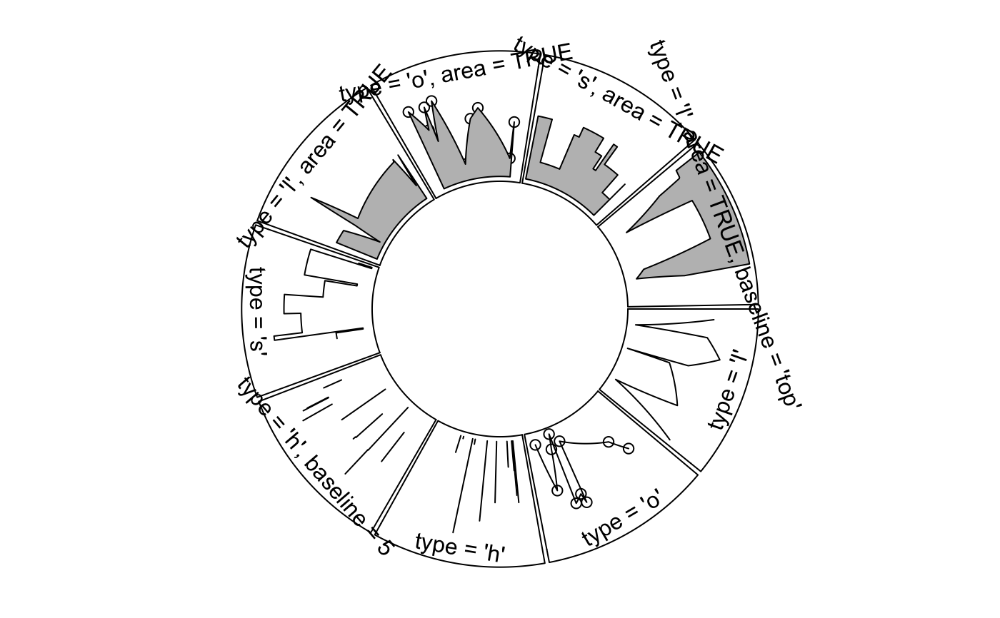

circos.lines.RdAdd lines to the plotting region
circos.lines( x, y, sector.index = get.current.sector.index(), track.index = get.current.track.index(), col = ifelse(area, "grey", par("col")), lwd = par("lwd"), lty = par("lty"), type = "l", straight = FALSE, area = FALSE, area.baseline = NULL, border = "black", baseline = "bottom", pt.col = par("col"), cex = par("cex"), pch = par("pch"))
| x | Data points on x-axis, measured in "current" data coordinate. |
|---|---|
| y | Data points on y-axis, measured in "current" data coordinate. |
| sector.index | Index for the sector. |
| track.index | Index for the track. |
| col | Line color. |
| lwd | Line width. |
| lty | Line style. |
| type | Line type, similar as |
| straight | Whether draw straight lines between points. |
| area | Whether to fill the area below the lines. If it is set to |
| area.baseline | deprecated, use |
| baseline | The base line to draw areas. By default it is the minimal of y-range (bottom). It can be a string or a number. If a string, it should be one of |
| border | color for border of the area. |
| pt.col | If |
| cex | If |
| pch | If |
Normally, straight lines in the Cartesian coordinate have to be transformed into curves in the circular layout.
But if you do not want to do such transformation you can use this function just drawing straight
lines between points by setting straight to TRUE.
Drawing areas below lines can help to identify the direction of y-axis in cells (since it is a circle). This can be done by specifying
area to TURE.
factors = letters[1:9] circos.par(points.overflow.warning = FALSE) circos.initialize(factors = factors, xlim = c(0, 10))